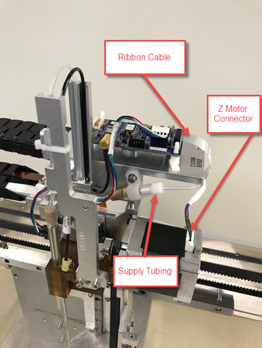
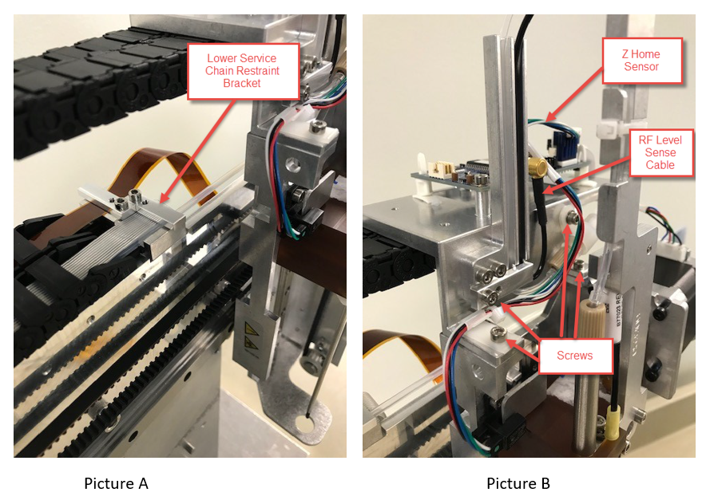
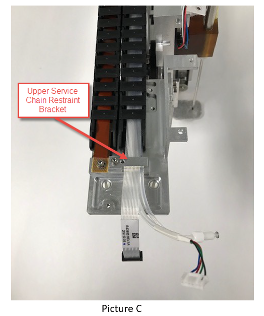
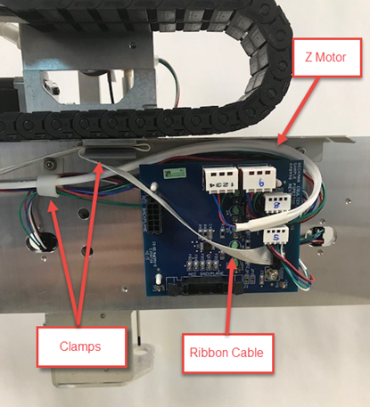
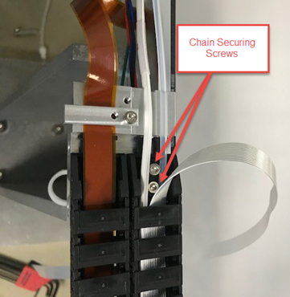
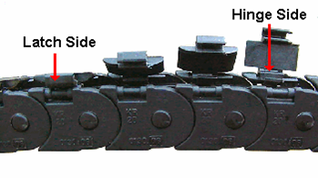
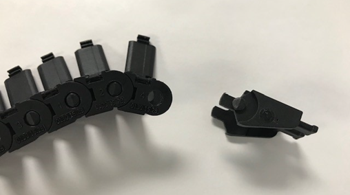

Replacing Sample Pipettor (Linear Y Axis) Main Tubing, RF Ribbon Cable, or Z-Motor Power Cable
This procedure describes how to replace the Main tubing and the RF ribbon cable on a Sample Pipettor with a Y axis linear slide.
Note: All the screws on the Linear Y Axis gantry are metric.
- Open the main upper left cover and insert a cover interlock switch bypass.
-
Drain the tubing for the sample pipettor.
- From the Main Menu, select Diagnostics > Device Diagnostics > Digital Devices > Peristaltic and Vacuum Pumps.
- Enable the vacuum pump for sample probe wash tower.
- Verify the sample pipettor is directly over the wash tower.
- Remove the fitting from the sample pump and allow the wash buffer to drain into the wash tower.
Caution: When draining wash buffer from the tubing, do not let fluid leak onto the instrument or any of the instrument components. Hold a dry paper towel under the disconnected fitting.
After the tubing is drained, disable the sample probe wash tower vacuum pump and exit the Digital Devices screen.
-
Disconnect tubing and service chain cables exiting top of service chain.

- Turn off all motor power by switching off All DC Power (except CPU and Reagent Cooler) at Power Distribution Board.
- Remove RF Level Sense PCB cover (3 captive screws).
- Disconnect service chain supply tubing from small tubing which connects to sample probe.
- Disconnect the Z motor connector from the motor.
- Disconnect RF level sense cable from RF Level Sense PCB.
-
Free tubing and service chain cables by removing restraint bracket at both ends of service chain.

- Manually move the pipettor carriage fully forward.
- Remove the screw that secures the restraint bracket at the lower end of the service chain (Picture A).
- Remove RF Level Sense PCB Mounting plate to unfold service chain - 4 screws (Picture B).
- Disconnect RF level sense cable and Z Home sensor cable from RF level sense PCB (Picture B).
- Remove the screw that secures the restraint bracket at the upper end of the service chain (Picture C).

-
Disconnect Service chain cables from the Pipettor Interface PCB.

- Disconnect Z motor and RF level sense ribbon cable from interface PCB.
- Remove cables from securing clamps.
-
Remove the chain.

- Remove the securing screws at both ends of the chain. Remove screws from upper end of service chain first.
- Remove the chain.
-
Opening the chain.
Note: The chain contains 3 components: supply tubing, RF level sense ribbon cable, Z motor power cable.
- Extend the chain to straighten it, and then rotate it so that the covers on the links face upward.
- Open the chain links (picture below).

Caution: Do not apply pressure to mounting bracket with the chain unrolled as this could lead to damaging the service chain links. -
Replacing the service loop component in the chain.
- Remove the component in question.
- If replacing RF ribbon cable, remove the first and last link in the service chain to allow easier cable removal.

- If replacing RF ribbon cable, remove the first and last link in the service chain to allow easier cable removal.
- Add the replacement component to the chain.
- Be aware of the orientation of the components in the chain.
- The tubing and z motor cable lay on the bottom of the chain.
- The ribbon cable is placed closest to the chain links that do not open - see Picture C in Step 4.
- Remove the component in question.
-
Reassemble service loop.
- Mount the chain.
- See pictures (Step 4) for chain orientation.
- Secure the chain with 2 screws at each end (see step 6).
- Reattach mounting bracket (Step 4).
- Reconnect the service loop components.
- Return motor power by switching on All DC Power (except CPU and Reagent Cooler) at Power Distribution Board.
- Mount the chain.
-
Verify system operation.
Refer to VSR: Sample Pipettor (Standard or LAS) document.